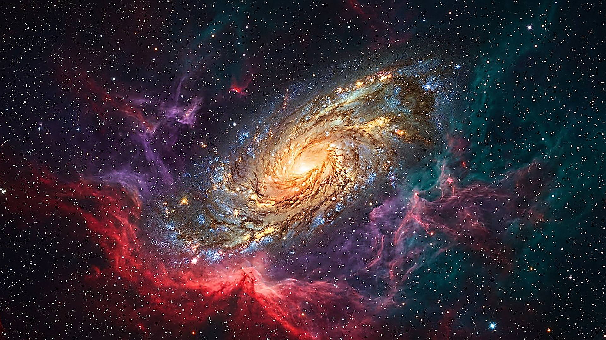
Aile I
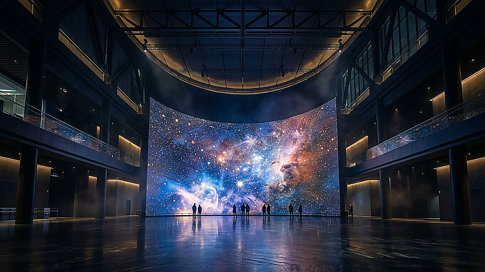
Musée numérique · 8 ailes · 30 salles et galeries
Ses qualités invisibles se voient clairement par les choses faites
Depuis la création du monde, ses perfections invisibles, sa puissance éternelle et sa divinité, se voient clairement, quand on les considère dans ses ouvrages.
Romains 1:20
Le parcours
L'ŒUVRE — Musée de la Création est un parcours immersif en 7 ailes et 22 salles. Chaque salle part d'un fait scientifique établi, vérifié dans la littérature primaire, le donne à voir et à manipuler, puis propose une réflexion raisonnée : la création porte la signature d'une intelligence supérieure, sage et puissante.

Aile I
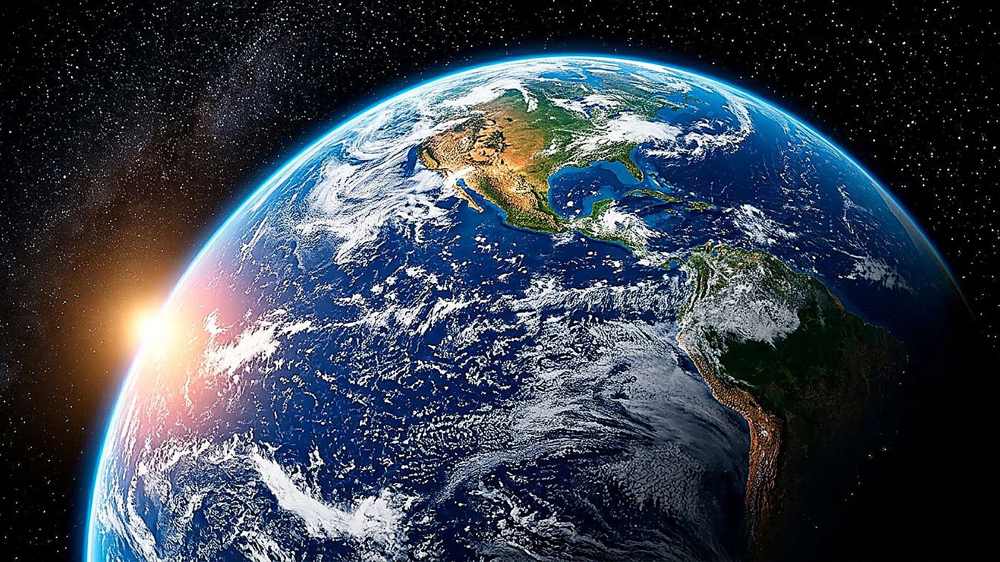
Aile II
Aile III
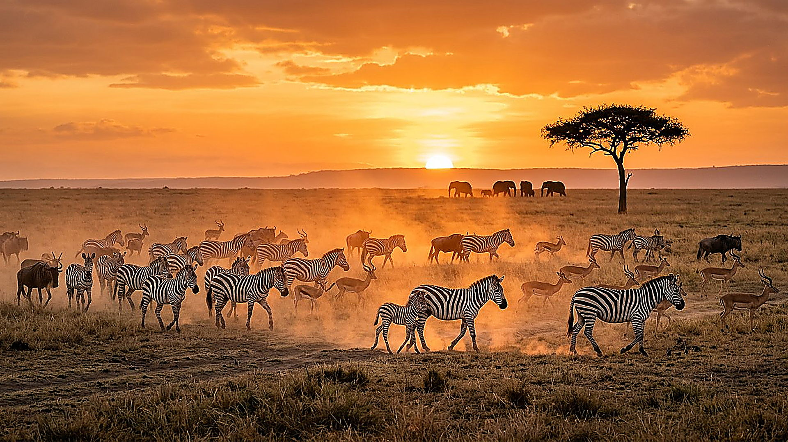
Aile IV
Aile V
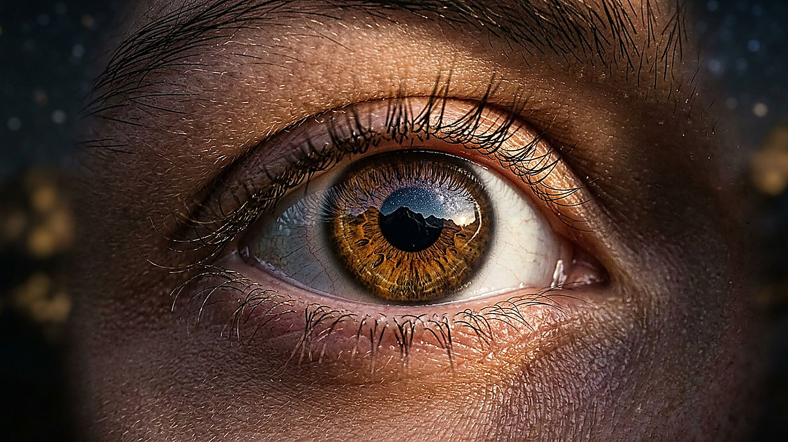
Aile VI
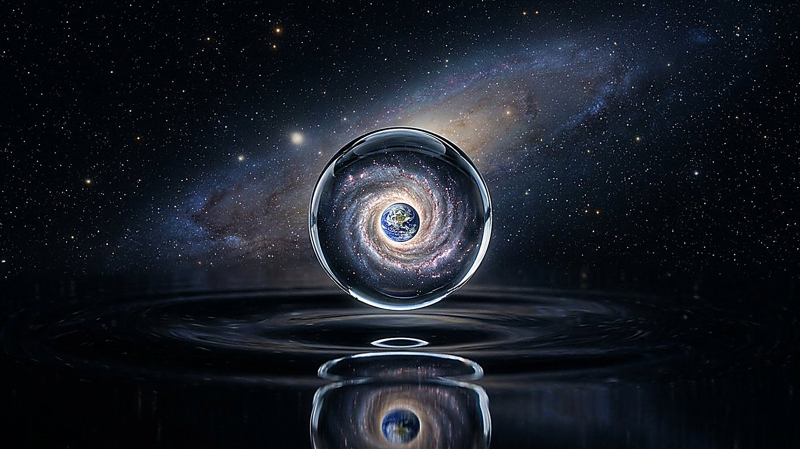
Aile VII

Aile VIII
Ce que l'on observe
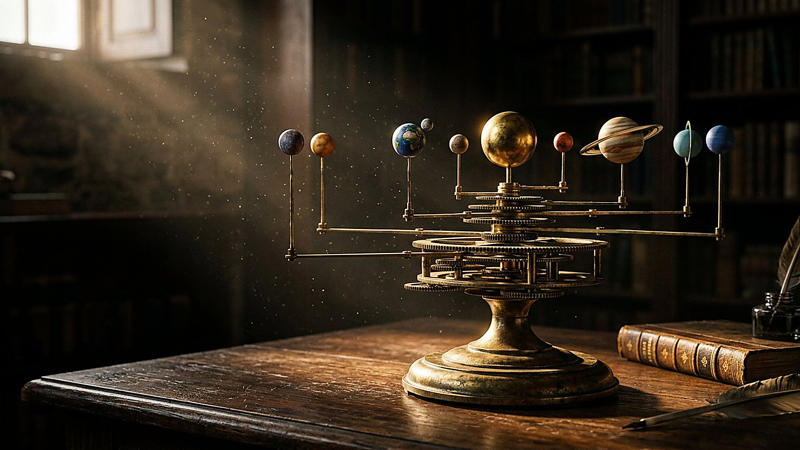
les lois et constantes de la physique.
Jérémie 33:25 ; Job 38:33 — aile I
la Terre préparée pour être habitée.
Isaïe 45:18 ; Actes 14:17 — aile II
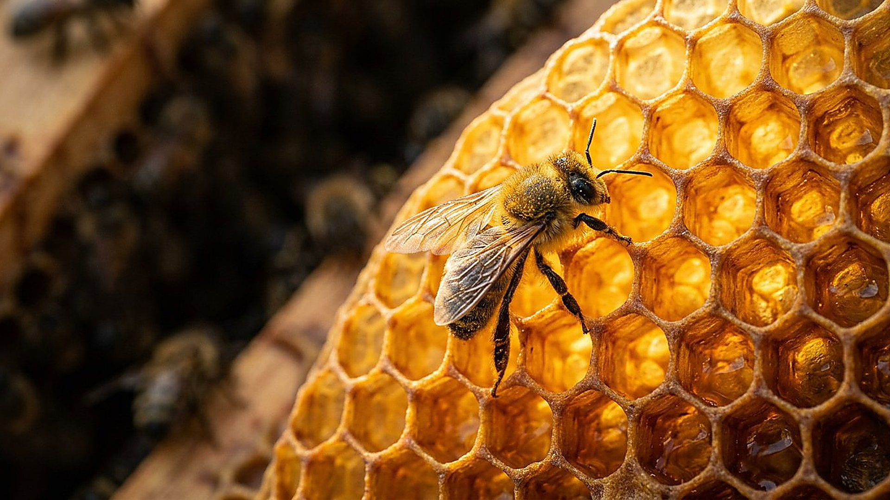
les machines moléculaires, la cellule, l'ADN.
Psaume 139:14-16 — aile III
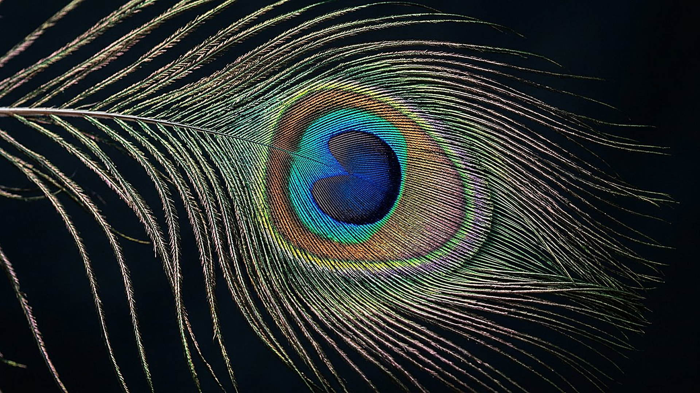
la beauté, les couleurs, la diversité, le génie que l'on copie.
Ecclésiaste 3:11 ; Psaume 104 — aile IV
Honnêteté intellectuelle
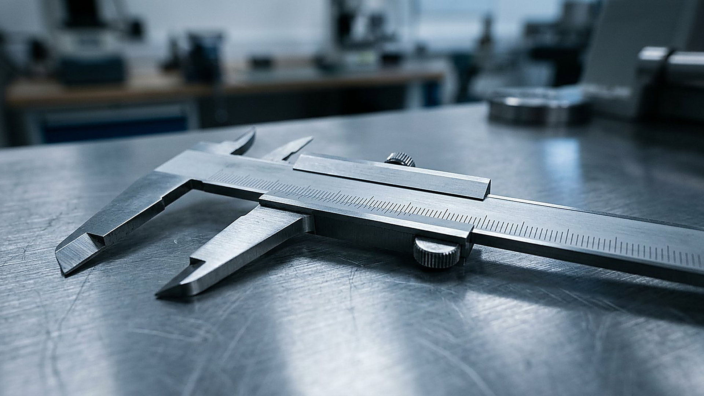
ÉTABLI Etabli
Fait scientifique établi, source primaire vérifiée.
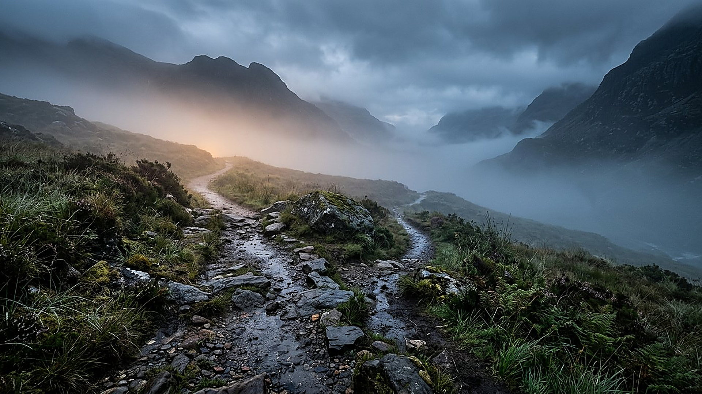
DÉBATTU Debattu
Recherche en cours ou conclusion débattue dans la littérature.
RÉFLEXION Reflexion
Conclusion raisonnée tirée des faits, appuyée par la Bible (Romains 1:20).
Aucune affirmation n'est présentée plus solide qu'elle ne l'est. Une hypothèse discutée par les chercheurs reste marquée comme telle ; une méditation personnelle n'est jamais confondue avec une mesure.
Chantier en cours · état E19
Salles
22/22
Faits sourcés
45/51
Sources
219
Médias
4
Choisir sa visite
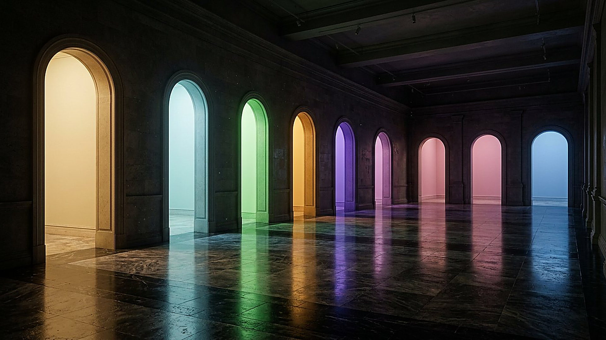
40 min
L'essentiel : une salle par aile.
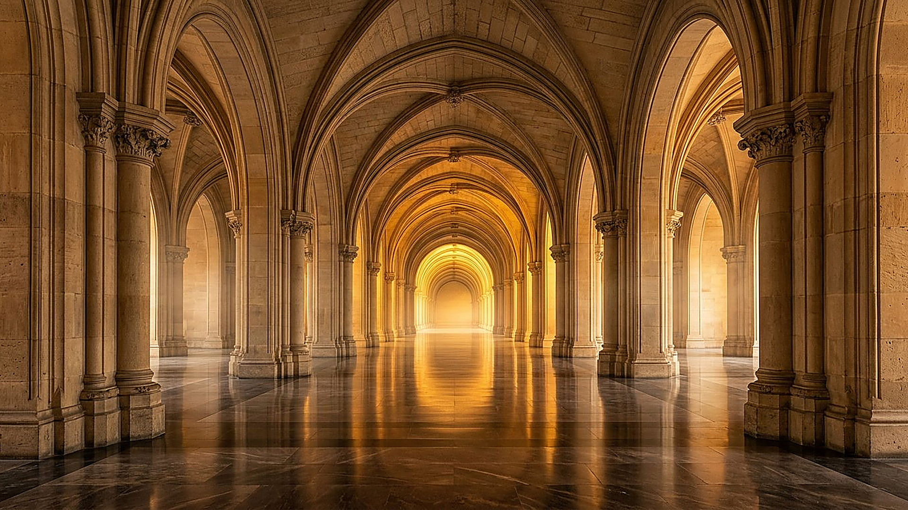
3 h
Les 22 salles dans l'ordre, du cosmos à la synthèse.
libre
Les sources d'abord : chaque affirmation renvoie à sa publication primaire.
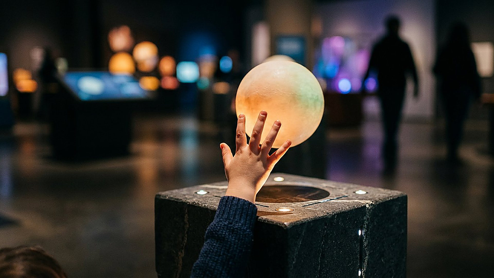
45 min
Quiz, comparaisons parlantes et simulations.
Descendre de l'infiniment grand à l'infiniment petit Méthode et parti pris
Audioguide
Bienvenue à L'ŒUVRE, musée de la Création. Vingt-deux salles, six ailes, trois niveaux de lecture : établi, en bleu-vert, pour ce qui est mesuré et confirmé ; débattu, en ambre, pour les hypothèses dominantes ; réflexion, en lapis, pour ce qui se médite sans se prouver. Chaque fait affiche sa source primaire et son année ; chaque image dit si elle est photographie authentique ou reconstitution numérique ; chaque narration offre sa transcription. La thèse du lieu tient en une phrase : l'œuvre porte la signature d'un créateur sage et puissant, que la Bible appelle Jéhovah — et cette conviction est présentée comme telle, jamais comme un résultat de mesure. Commencez où vous voulez : au commencement, salle un, pour l'âge du monde ; ou par la salle vingt-deux, pour savoir où l'on vous emmène. Une règle ne change pas : la mesure d'abord, la lecture ensuite, et la liberté du visiteur toujours. Bonne visite. L'audio est proposé dans chaque salle ; des effets sonores accompagnent certaines interactions, synthétisés à la volée, sans fichier ni traceur. Et si vous n'avez qu'une minute : salle sept, l'eau. Tout le reste suivra.
Aile VIII · Cabinet des merveilles
Chaque jour, une nouvelle invitation à explorer le vivant.

Le compteur de découverte est disponible avec JavaScript sur cet appareil.